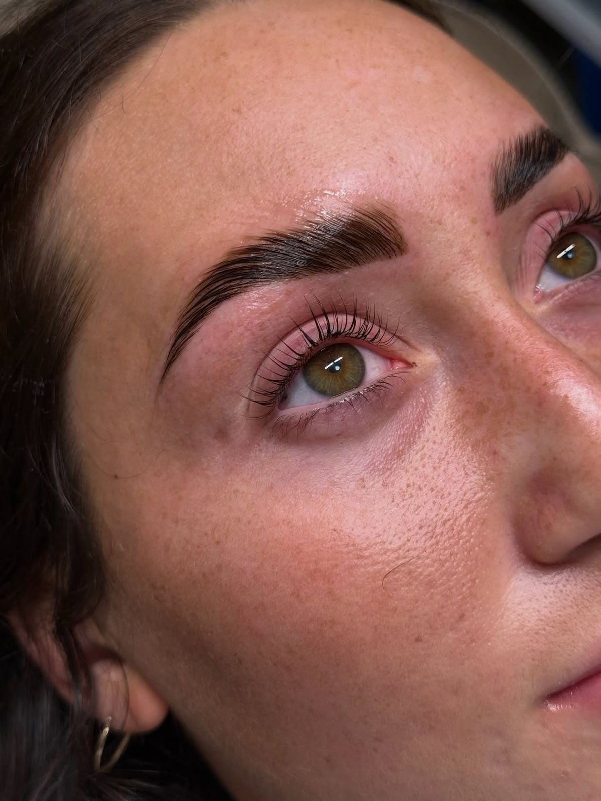

Si tienes cejas ralas, desordenadas o con pelitos que van para todos lados, el laminado de cejas (Brow Lamination) las deja peinadas, pobladas y prolijas por semanas, sin necesidad de rellenarlas todos los días con maquillaje.
¿En qué consiste?
Aplicamos un tratamiento que reestructura temporalmente el pelo de la ceja, peinándolo hacia arriba y en la dirección que más favorece tu rostro. El resultado son cejas más pobladas y uniformes, con un efecto natural que se mantiene por varias semanas.
Beneficios
- Cejas con aspecto más poblado, sin necesidad de maquillarlas a diario.
- Ideal para cejas ralas, asimétricas o con pelos rebeldes.
- Efecto natural y duradero, resistente al agua y al ejercicio.
¿Cómo es el proceso?
- 1. Diagnóstico: evaluamos el largo y densidad de tu pelo para definir el diseño.
- 2. Peinado y fijación: aplicamos el tratamiento que reestructura el pelo en la dirección deseada.
- 3. Nutrición: sellamos con un producto que hidrata y protege el pelo.
- 4. Diseño final: perfilamos la forma para un resultado prolijo de principio a fin.
Cuidados posteriores
- Evita mojar las cejas durante las primeras 24 horas.
- No uses productos con aceite en la zona los primeros días.
- Peina suavemente con un cepillo de cejas si el pelo se desordena.
Precio y duración
$20.000 — 70 minutos aproximadamente.